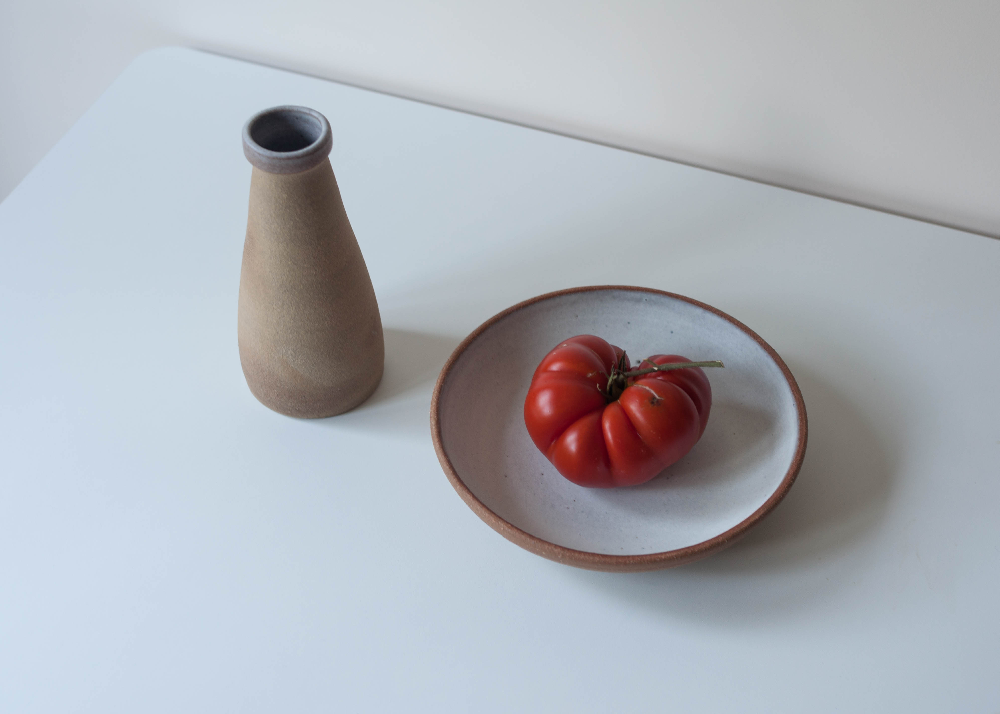
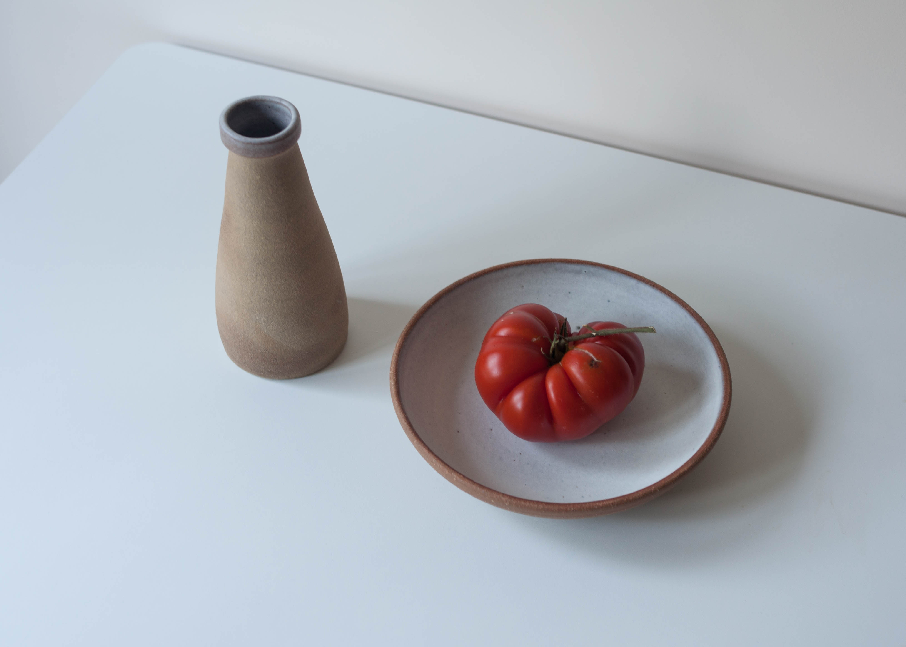

Five Element Feast
For this collection, I collaborated with Tom Hunt, a chef dedicated to eco cooking or "root to fruit" as he calls it, a method where no part of the food is wasted. Nature is always a leading element in my work, and collaborating with Tom broadened my view on how to further a person's connection to food through ceramics.
The basis for the meal was the five Chinese elements, with each course representing Earth, Water, Fire, Metal, and Wood. These natural subjects had to be reflected in the food as well as the ceramics, regarding hue, surface, and profile. The meal had to compliment the plate and vice versa in a harmonious balance.
The project was based predominantly on experimental work, which was later refined and distilled to accentuate Tom's culinary vision. Choosing the forms that displayed and held liquids especially aesthetically, contrasting ingredients against different clays and developing further those which were most striking. With some of the vessels, I felt the need to try something a bit offbeat, different to what would habitually be seen at the dinner table.
The Temple was created for Fire, and naturally, as a potter, I thought of heat, kilns, lids, an object to be opened and behold what is nestled inside. When I showed Tom the form, he instantly asked for black clay and a red interior. This was to juxtapose with the white yogurt but also to further foster the effect of heat on red, burnt strawberries. To supplement the experience of sight and touch was the most sensuous part of the experience, singed bay leaves. These were placed inside resulting in an indulgence of fragrance and smokey visuals when the lid was opened.
Being involved in this project, I’ve learned many of the aspects in which ceramics and food coexist. Ceramics are not just a stationary object, purely based in a still moment, they can be kinetic. Food is an act, and ceramics are the stage and context. When observed in this way, the possibilities become more intriguing to discover, and another lid is opened.
 
